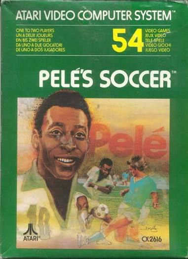
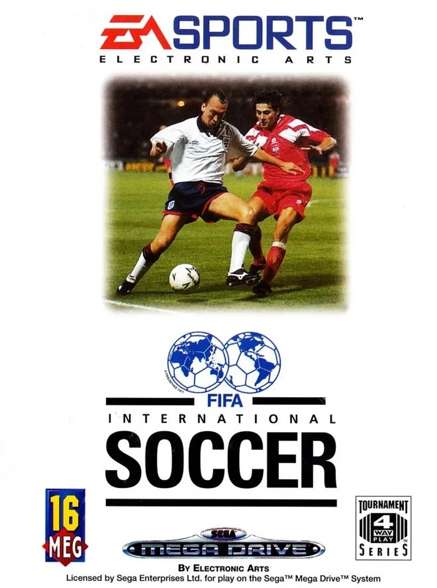
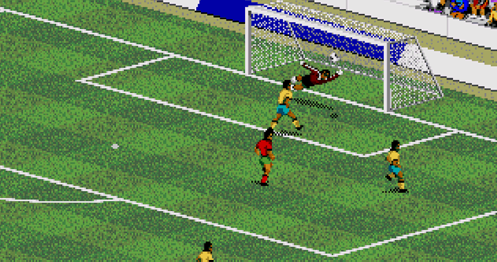

Antes de FIFA International Soccer chegar aos videogames, o futebol já aparecia em diferentes jogos
eletrônicos. Porém, representar o esporte dentro de um videogame ainda era um grande desafio.
Os primeiros jogos de futebol precisavam trabalhar com as limitações técnicas dos computadores e
consoles da
época. Os gráficos eram simples, os jogadores tinham pouca diferenciação e a experiência estava muito
distante daquilo que conhecemos atualmente.
Mesmo assim, esses primeiros jogos ajudaram a criar um espaço para que o futebol se tornasse cada vez
mais
presente nos videogames.

Capa de Pelé's Soccer (1980), lançado para Atari 2600.
A Electronic Arts entra no futebol
A chegada da Electronic Arts
Durante esse período, a EA já estava construindo sua presença no
mercado de jogos
esportivos.
A empresa começou a investir cada vez mais em experiências esportivas e buscava desenvolver jogos
capazes de
aproximar os jogadores dos esportes que conheciam na vida real.
O futebol era uma oportunidade importante. A ideia de criar um jogo que representasse o esporte de
maneira
mais completa ajudou a abrir caminho para o nascimento da franquia que mais tarde ficaria conhecida
mundialmente como FIFA.
Surge FIFA International Soccer
O nascimento de FIFA International Soccer
Foi nesse contexto que surgiu o FIFA International Soccer.
Lançado em 1993, o jogo foi o primeiro título da série FIFA e marcou o início de uma trajetória que
continuaria durante décadas.
A partir daquele momento, o nome FIFA começaria a ganhar espaço no mundo dos videogames e a franquia
passaria a evoluir junto com as novas gerações de consoles e computadores.

FIFA International Soccer, o primeiro título da série FIFA.
Como era o primeiro FIFA?
Uma experiência diferente
Comparado aos jogos atuais, FIFA International Soccer era extremamente simples. Os gráficos, a
movimentação
dos jogadores e os recursos disponíveis eram limitados pelas tecnologias daquela época.
Mesmo com essas limitações, o jogo buscava representar elementos importantes de uma partida de futebol e
oferecia aos jogadores a possibilidade de controlar as ações dentro do campo.
O que hoje parece básico era, naquele momento, parte de uma experiência que ajudaria a estabelecer uma
nova
fase dos jogos de futebol.

Uma partida de FIFA International Soccer.
O jogo em ação
FIFA International Soccer em ação
Uma das melhores formas de entender como a franquia começou é observar o próprio jogo em funcionamento.
O vídeo abaixo mostra FIFA International Soccer e permite comparar a experiência de seus primeiros anos
com
os jogos de futebol atuais.
Gameplay de FIFA International Soccer.
Uma pequena conclusão
FIFA International Soccer foi apenas o início de uma franquia
que continuaria evoluindo junto com os videogames.
As próximas versões trariam novos recursos, gráficos e formas
de jogar.